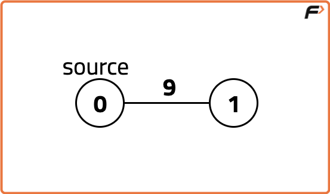
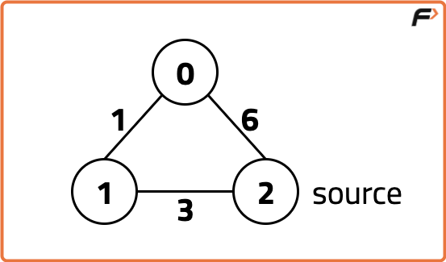

Archived from https://takeuforward.org/data-structure/dijkstras-algorithm-using-set-g-33/
Problem Statement: Given a weighted, undirected, and connected graph of V vertices and an adjacency
list adj where adj[i] is a list of lists containing two integers where the first integer of each list j denotes
there is an edge between i and j, second integers corresponds to the weight of that edge. You are
given the source vertex S and You have to Find the shortest distance of all the vertex from the source vertex S. You
have to return a list of integers denoting the shortest distance between each node and Source
vertex S.
Note: The Graph doesn’t contain any negative weight cycle
Examples
Example 1:
Input:

V = 2
adj [] = {{{1, 9}}, {{0, 9}}}
S = 0
Output: 0 9
Explanation:
The source vertex is 0. Hence, the shortest distance of node 0
from the source is 0 and the shortest distance of node 1 from
source will be 9.
Example 2:
Input:

V = 3, E = 3
adj = {{{1, 1}, {2, 6}}, {{2, 3}, {0, 1}}, {{1, 3}, {0, 6}}}
S = 2
Output:
4 3 0
Explanation:
For nodes 2 to 0, we can follow the path 2-1-0.
This has a distance of 1+3 = 4, whereas the path 2-0
has a distance of 6. So, the Shortest path from 2 to 0 is 4.
The shortest distance from 0 to 1 is 1.
Disclaimer: Here is the practice link to
help you assess your knowledge better. It's highly recommend trying to
solve it before looking at the solution.
Approach
Algorithm
Intuition:
This approach uses a set to implement Dijkstra’s Algorithm for finding the shortest
distances from a source node to all other nodes in a graph.
Key Components:
Source Node: The node from which we calculate all shortest paths.
Set: Stores pairs {dist, node}. The node with the smallest
distance is always processed first.
Distance Array: Initialized with infinity, stores the minimum known
distances from the source to every node. Distance to the source itself is 0.
Algorithm:
Initialize the set with {0, source} and the distance array with INF, except for
the source node which is set to 0.
While the set is not empty:
Remove the pair with the smallest distance from the set.
For each adjacent node, check if a shorter path is found using the current node.
If yes, update the distance and insert the new pair into the set.
Remove any existing pair in the set that has the same node but a greater distance.
Continue until all nodes are processed. The distance array now contains the shortest
distances from the source.
Important Notes:
Dijkstra’s Algorithm does not work with negative weights or negative cycles.
If negative weights are used, the distances will keep getting updated infinitely, leading to
incorrect results.
A set is preferred here over a priority queue because it allows easier
replacement of older pairs with worse distances.
Example: If a node can be reached by two paths (cost 7 and cost 9), the
algorithm ensures only the path with cost 7 is kept. Since sets store elements in sorted order,
the node with the smallest distance is always processed first.
Code
#include <bits/stdc++.h>
using namespace std;
class Solution
{
public:
// Function to find the shortest distance of all the vertices
// from the source vertex S.
vector<int> dijkstra(int V, vector<vector<int>> adj[], int S)
{
// Create a set ds for storing the nodes as a pair {dist,node}
// where dist is the distance from source to the node.
// set stores the nodes in ascending order of the distances.
set<pair<int, int>> st;
// Initialising dist list with a large number to
// indicate the nodes are unvisited initially.
// This list contains distance from source to the nodes.
vector<int> dist(V, 1e9);
// Insert the source node with a distance of 0.
st.insert({0, S});
// Source initialised with dist = 0
dist[S] = 0;
// Traverse the graph until the set is empty
while(!st.empty()) {
// Extract the node with the minimum distance
auto it = *(st.begin());
int node = it.second;
int dis = it.first;
st.erase(it);
// Check for all adjacent nodes of the extracted node
for(auto it : adj[node]) {
int adjNode = it[0]; // Adjacent node
int edgW = it[1]; // Weight of the edge
// If the new distance is smaller, update it
if(dis + edgW < dist[adjNode]) {
// Erase the previous entry of the adjacent node
// if it was visited previously with a larger cost.
if(dist[adjNode] != 1e9)
st.erase({dist[adjNode], adjNode});
// Update the distance for the adjacent node
dist[adjNode] = dis + edgW;
// Insert the adjacent node with the updated distance into the set
st.insert({dist[adjNode], adjNode});
}
}
}
// Return the list containing shortest distances
// from source to all the nodes.
return dist;
}
};
int main()
{
// Driver code.
int V = 3, E = 3, S = 2; // Number of vertices, edges, and source vertex
vector<vector<int>> adj[V]; // Adjacency list representation of the graph
// Example graph with edges and weights
vector<int> v1{1, 1}, v2{2, 6}, v3{2, 3}, v4{0, 1}, v5{1, 3}, v6{0, 6};
adj[0].push_back(v1);
adj[0].push_back(v2);
adj[1].push_back(v3);
adj[1].push_back(v4);
adj[2].push_back(v5);
adj[2].push_back(v6);
Solution obj;
// Call dijkstra function and store the result
vector<int> res = obj.dijkstra(V, adj, S);
// Output the shortest distance from source to all nodes
for (int i = 0; i < V; i++)
{
cout << res[i] << " ";
}
cout << endl;
return 0;
}
// Solution class to implement Dijkstra's Algorithm
class Solution {
// Function to find the shortest distance of all the vertices from the source vertex S
public int[] dijkstra(int V, ArrayList<int[]>[] adj, int S) {
// Create a priority queue to store the nodes as a pair {dist, node}
// The queue will always return the node with the smallest distance first
PriorityQueue<int[]> pq = new PriorityQueue<>((a, b) -> a[0] - b[0]);
// Initialising dist array with a large number to indicate the nodes are unvisited initially
int[] dist = new int[V];
Arrays.fill(dist, Integer.MAX_VALUE);
// Source initialised with dist = 0
dist[S] = 0;
pq.offer(new int[]{0, S});
// Traverse the graph using the priority queue
while (!pq.isEmpty()) {
int[] curr = pq.poll();
int dis = curr[0]; // Distance of the current node
int node = curr[1]; // Current node
// Traverse all the adjacent nodes
for (int[] edge : adj[node]) {
int adjNode = edge[0]; // Adjacent node
int weight = edge[1]; // Weight of the edge
// If the new calculated distance is smaller, update it
if (dis + weight < dist[adjNode]) {
dist[adjNode] = dis + weight;
pq.offer(new int[]{dist[adjNode], adjNode});
}
}
}
return dist;
}
}
// Main class to test the Solution class
public class Main {
public static void main(String[] args) {
// Number of vertices and edges
int V = 3, E = 3, S = 2;
// Create adjacency list to represent the graph
ArrayList<int[]>[] adj = new ArrayList[V];
for (int i = 0; i < V; i++) {
adj[i] = new ArrayList<>();
}
// Add edges to the graph
adj[0].add(new int[]{1, 1});
adj[0].add(new int[]{2, 6});
adj[1].add(new int[]{2, 3});
adj[1].add(new int[]{0, 1});
adj[2].add(new int[]{1, 3});
adj[2].add(new int[]{0, 6});
Solution obj = new Solution();
// Call dijkstra function and store the result
int[] res = obj.dijkstra(V, adj, S);
// Output the shortest distance from source to all nodes
for (int i = 0; i < V; i++) {
System.out.print(res[i] + " ");
}
System.out.println();
}
}
import heapq
class Solution:
# Function to find the shortest distance of all the vertices from the source vertex S
def dijkstra(self, V, adj, S):
# Create a priority queue to store the nodes as a pair {dist, node}
# The queue will always return the node with the smallest distance first
pq = []
# Initialising dist list with a large number to indicate the nodes are unvisited initially
dist = [float('inf')] * V
dist[S] = 0
# Push the source node with distance 0 into the priority queue
heapq.heappush(pq, (0, S))
while pq:
# Pop the node with the smallest distance
dis, node = heapq.heappop(pq)
# Traverse all the adjacent nodes
for adjNode, weight in adj[node]:
# If the new calculated distance is smaller, update it
if dis + weight < dist[adjNode]:
dist[adjNode] = dis + weight
heapq.heappush(pq, (dist[adjNode], adjNode))
return dist
# Driver code
if __name__ == "__main__":
# Number of vertices and edges
V = 3
E = 3
S = 2
# Create adjacency list to represent the graph
adj = [[] for _ in range(V)]
# Add edges to the graph
adj[0].append((1, 1))
adj[0].append((2, 6))
adj[1].append((2, 3))
adj[1].append((0, 1))
adj[2].append((1, 3))
adj[2].append((0, 6))
# Create an instance of the Solution class
obj = Solution()
# Call dijkstra function and store the result
res = obj.dijkstra(V, adj, S)
# Output the shortest distance from source to all nodes
print(" ".join(map(str, res)))
class Solution {
// Function to find the shortest distance of all the vertices from the source vertex S
dijkstra(V, adj, S) {
// Create a priority queue to store the nodes as a pair {dist, node}
// The queue will always return the node with the smallest distance first
const pq = [];
// Initialising dist list with a large number to indicate the nodes are unvisited initially
const dist = Array(V).fill(Infinity);
dist[S] = 0;
// Push the source node with distance 0 into the priority queue
pq.push([0, S]);
while (pq.length > 0) {
// Pop the node with the smallest distance
const [dis, node] = pq.shift();
// Traverse all the adjacent nodes
for (const [adjNode, weight] of adj[node]) {
// If the new calculated distance is smaller, update it
if (dis + weight < dist[adjNode]) {
dist[adjNode] = dis + weight;
pq.push([dist[adjNode], adjNode]);
}
}
}
return dist;
}
}
// Driver code
const V = 3, E = 3, S = 2;
const adj = [[], [], []];
// Add edges to the graph
adj[0].push([1, 1]);
adj[0].push([2, 6]);
adj[1].push([2, 3]);
adj[1].push([0, 1]);
adj[2].push([1, 3]);
adj[2].push([0, 6]);
const obj = new Solution();
const res = obj.dijkstra(V, adj, S);
// Output the shortest distance from source to all nodes
console.log(res.join(" "));
Complexity Analysis
Time Complexity: O(E log V), as each edge leads to at most one insertion in the
priority queue, which takes log V time.
Space Complexity: O(V + E), due to the distance array and adjacency list storing all
vertices and edges.